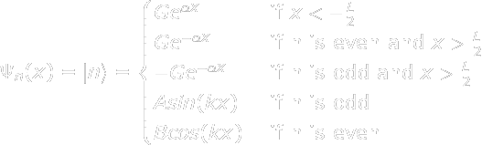

Position Arrowheads correspond to units of distance.
Real Axis of Wavefunction
Imaginary Axis of Wavefunction
Momentum Display Momentum Wavefunction
Play Speed(1=RealTime):
X Scaling:
Y Scaling:
Mass: 3
Length "L": 3
Potential "V₀": 3
*No. of points:
*Manually Input Coefficients: (Up to N)
Define Cn=f(n,t,u,w)
n<N
u = 1 + 0i
w = 1 + 0i
*f(n,t,u,w)=
*Needs "Apply"
Help- "Finite Potential Well"

The Particle In A Box is a useful approximation, but not very realistic. In order to perfectly confine a particle to a segment of a line, you'd need infinite energy in real life. In this simulation you can choose the strength of the wall "V0" and all the usual things like mass and the size of the space etc. In this one though there is a maximum energy level defined by the conditions because, if the particle has more energy than the Barrier, then it can completely escape.
The "n" values count up from 0 to whatever the maximum is. The maximum is visible at the top of the green and teal boxes for choosing coefficients. In manual mode it tells you how many coefficients you can type. In function mode it tells you what the maximum value of "n" is.
This simulation shows quantum tunneling, you can see the particle "leaking out" of the barrier even though it doesn't classically have enough energy to leave. Its almost like a toddler having a small chance of being able to take three steps on a stairway in one stride. This is an important phenomenon for computer designers because if you have thin wires next to each other, the electrons can leak out into nearby wires causing problems.
The equation for each state in this simulation is far more complicated than I'm making it seem. The values of A,B,G,alpha and k are dependant on the potential well but not in a simple way that can be represented with a mathematical function. The way they are calculated is by first calculating the allowable energies, using that to work out the allowed ks and then normalising each individual state with the additional condition that it must be continuous at the boundary. These calculations are unfortunately beyond the scope of this help panel but can be done with some basic calculus and patience.